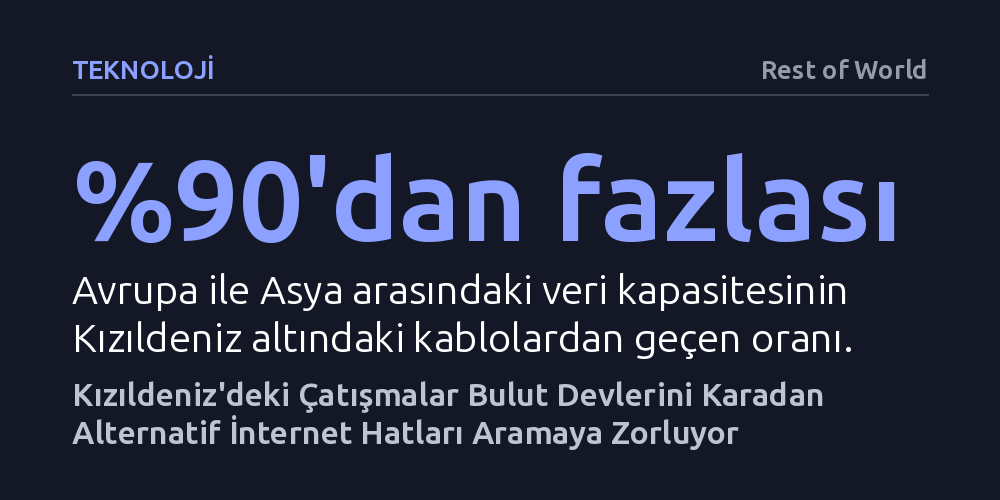

TEKNOLOJI · Rest of World · 2026-10-07
Kızıldeniz'deki çatışmaların deniz altı veri kablolarını tehdit etmesi, küresel bulut devlerini Türkiye ve Irak üzerinden geçen pahalı kara hatlarına yöneltiyor. Şirketler, olası internet kesintilerine karşı karasal fiber hatları yüksek maliyetlerle güvenceye alarak yeni rotalar oluşturuyor.
Küresel internet trafiğinin soyut bir bulutta değil, çatışma bölgelerindeki savunmasız deniz altı kablolarında aktığını ve teknoloji devlerinin bu kırılganlık yüzünden rotayı karaya çevirdiğini gösteriyor.

Avrupa ile Asya arasındaki dijital veri kapasitesinin yüzde 90'ından fazlası Kızıldeniz'in tabanına serili kablolardan geçiyor. Bu devasa veri akışı, Yemen ile Afrika kıyısındaki Cibuti ve Eritre arasında uzanan ve genişliği 32 kilometreyi bile bulmayan daracık Babülmendep Boğazı'nda sıkışıyor. Boğazın Yemen yakasının ve kritik geçiş noktalarının çatışmalara sahne olması, kıtalararası internet omurgasını doğrudan jeopolitik risklerin ortasında bıraktı.
Deniz tabanındaki kabloların zarar görmesi halinde onarım süreci aylarca süren bir krize dönüşebiliyor. Çalışma yapacak tamir gemilerinin bölgedeki aktörlerden güvenlik garantisi ve izin alması son derece zorlu bir bürokrasi gerektiriyor. Nitekim 2024 yılında vurulan bir kargo gemisinin sürüklenen çıpasıyla kopan üç kablonun tamiri bu izinler yüzünden aylarca gecikmişti. Üstelik alternatif deniz kabloları da neredeyse bütünüyle aynı dar geçidi kullandığı için deniz içinde yedek bir rota bulmak fiilen imkânsız hale geliyor.
Dünyadaki uluslararası internet bant genişliğinin yaklaşık dörtte üçünü tüketen Google, Meta, Microsoft ve Amazon gibi devler, Kızıldeniz'deki bu kriz derinleştikçe rotayı karasal ağlara çevirmeye başladı. Şirketler, daha önce yalnızca acil durumlar için kenarda tuttukları kara hatlarını aktif veri akışına açarak olası bir büyük kopuşa karşı önlem alıyor.
Bu tedbir şirketlere olağanüstü yüksek faturalar çıkarıyor. Örneğin Google, Türkiye'deki devlet boru hatları boyunca uzanan fiber optik hatları güvence altına alabilmek için piyasa maliyetlerinin iki ila üç katı fazlasını ödemeyi kabul etti. Microsoft ise 2030 yılına kadar Orta Doğu'daki deniz ve kara bağlantılarına 400 milyon doların üzerinde yatırım yapacağını duyurdu. Eş zamanlı olarak Irak, güneydeki El-Fav limanından başlayıp Türkiye sınırına uzanan yer altı fiber hattı üzerinden Avrupa'ya veri aktarımı sağlamak amacıyla yeni uluslararası anlaşmalara imza attı.
Teknoloji dünyasında soyut bir sistem gibi algılanan bulut altyapısı, gerçekte savaş bölgelerinin, boru hatlarının ve deniz yataklarının fiziksel kırılganlığına göbekten bağlı. Mart ayında İran İHA'larının Körfez'deki Amazon veri merkezlerini vurmasıyla bölgedeki bankacılık ve ödeme sistemlerinin çökmesi, bu altyapının ne denli korunmasız olduğunu somut biçimde ortaya koymuştu.
Karasal fiber hatlarını bağlamak da kolay ve ucuz bir süreç değil. Uzun mesafeli fiber anlaşmaları genellikle 15 yıl veya daha uzun süreli kullanım için devasa peşin ödemeler ve düzenli bakım bedelleri gerektiriyor. Bulut şirketleri henüz verinin ezici çoğunluğunu deniz tabanından aktarmayı sürdürse de olası bir felaket anında hazırlıksız yakalanmamak için bu pahalı kara hatlarını canlı trafikle test etmeye devam ediyor.
İnternet devleri uzun süre Yemen'deki çatışmaların yatışacağını ve Kızıldeniz geçişinin yeniden istikrara kavuşacağını umut ediyordu. Ancak sahadaki çatışmaların kalıcılaşması, uluslararası aktörlerin yerel güç dengelerini yeni normal olarak benimsediği bir tür 'Afganistan senaryosunu' gündeme getirdi. Sektör temsilcilerinin ifadesiyle, "bu senaryo her geçen gün daha fazla fiyatlanıyor."
Teknoloji devleri artık geçici bir kriz yönetimi yapmıyor; internet omurgasını jeopolitik olarak daha güvenli kabul edilen kara koridorlarına kalıcı biçimde dağıtacak yeni bir altyapı mimarisi kuruyor. Kızıldeniz krizi, küresel veri akışının kesintisiz sürmesinin yalnızca teknolojiye değil, bölgesel istikrarsızlıklara karşı alınan yüksek maliyetli jeopolitik önlemlere dayandığını kanıtlıyor.